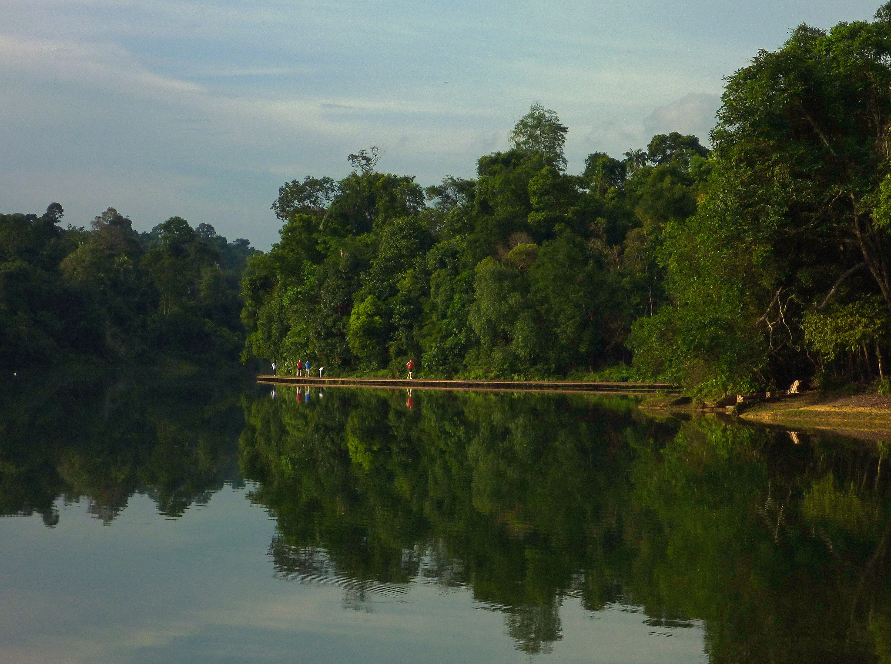
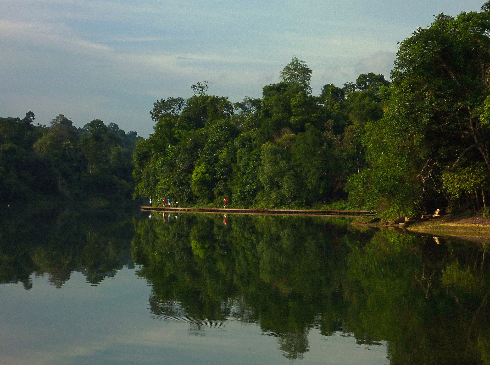

A gateway to Singapore’s nature reserves, the MacRitchie Reservoir Park is a popular spot for nature lovers and exercise enthusiasts. With hiking trails, kayaks and canoes for rent, it is also a great place for recreational activities, both on land and in water. A 12-hectare green haven bordering the country’s first reservoir and the Central Catchment Nature Reserve, the MacRitichie Reservoir Park is highly visited by nature lovers and sports enthusiasts. As a gateway to our pristine forest and waters, the park is a popular venue for schools and organisations to hold cross-country events, allowing participants to run through designated trails while embracing the wonders of our native biodiversity. The iconic MacRitchie bandstand continues to hold a special place in the hearts of many Singaporeans, and is often used to host performing arts presentations and solemnisation ceremonies.
Animal Watching


Water Activities


Hiking
 
